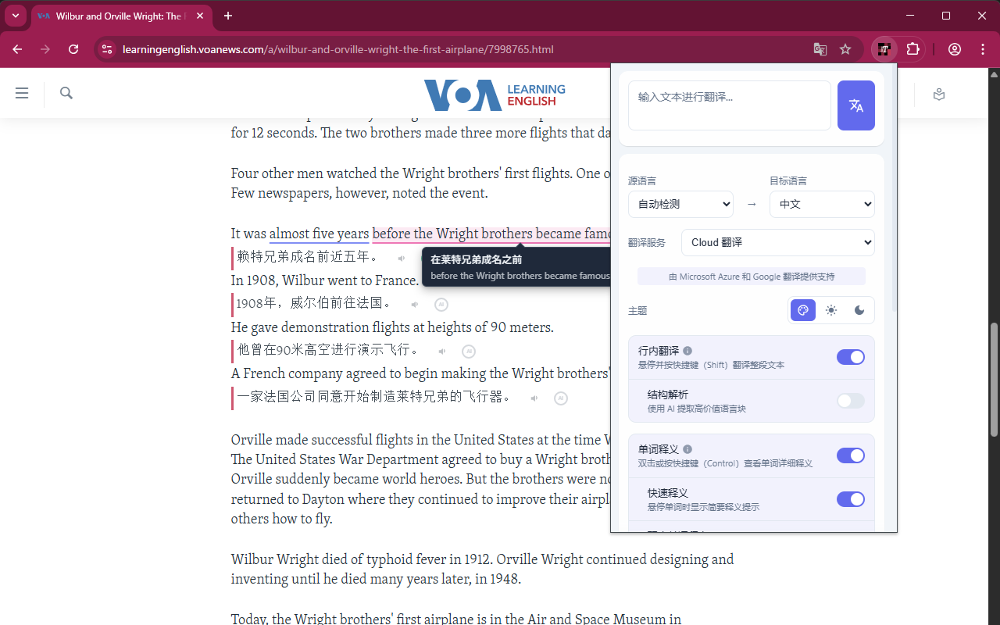
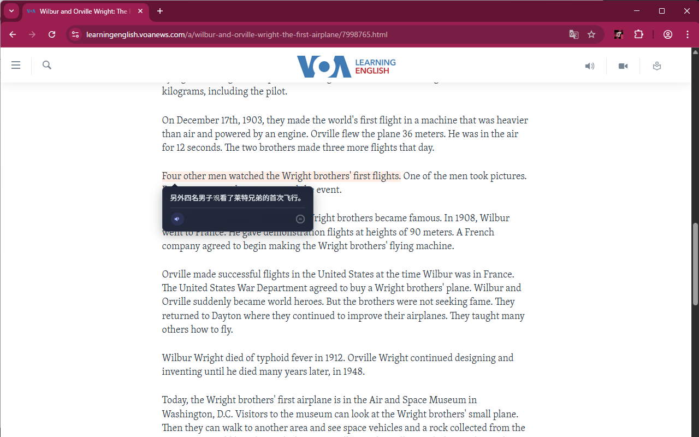
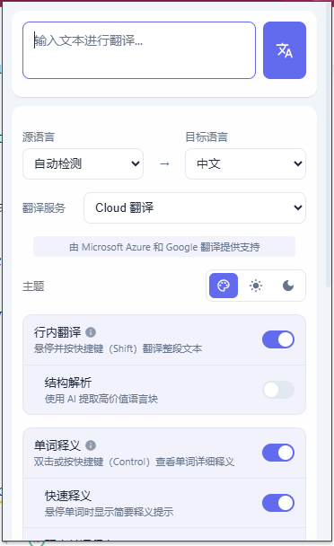
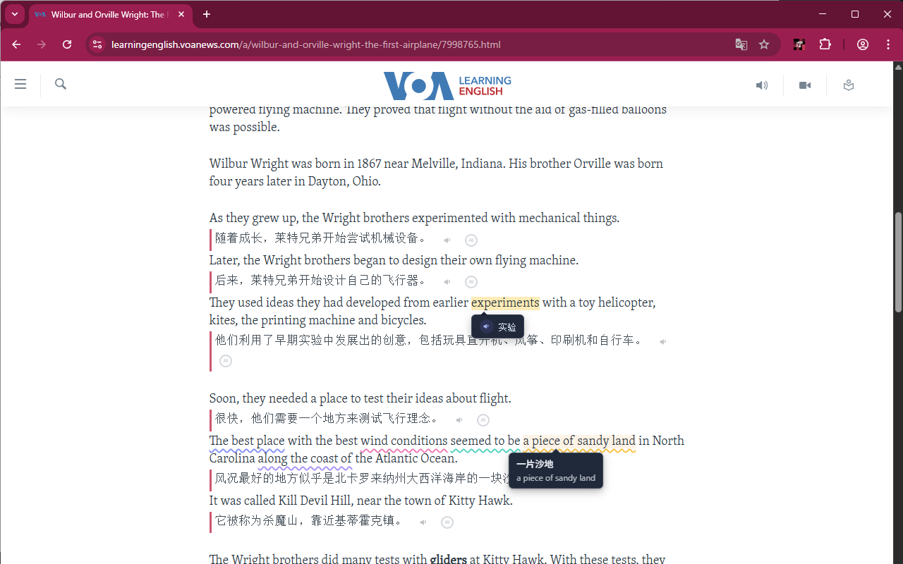
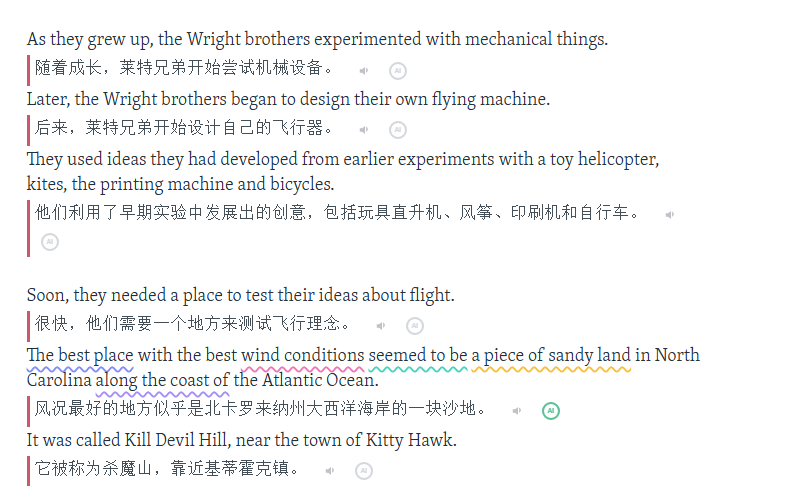
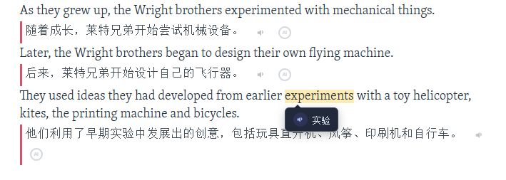
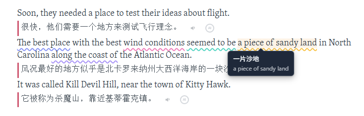
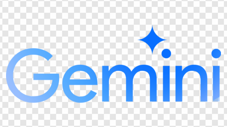

界面展示
实际使用效果，所见即所得




WordByWord 不仅仅是一款翻译工具，更是您的沉浸式语言学习伴侣。
我们利用最先进的 AI 技术，解决了传统翻译工具"脱离语境"和"打断阅读流"的两大痛点。
无论是浏览外文资讯、阅读技术文档还是学习外语，WordByWord 都能助您扫清障碍，深度理解每一行文字。

AI 理解语境，比传统词典更懂你
快捷键操作，指哪打哪，绝不拖泥带水
现代化 UI 设计，让阅读成为一种享受
Inline Translation - 告别视线在原文和译文之间来回跳跃的疲劳

Context-Aware Definition - 拒绝千篇一律的字典死义

Structure Analysis - 专为语言学习者打造的进阶功能

实际使用效果，所见即所得



提供"玻璃深色 (Glass Dark)"与"经典浅色"主题，完美适配您的浏览器外观
内置薄荷绿、蜜桃粉、天空蓝等多种高亮配色，让您的阅读标记赏心悦目
从翻译服务源到下划线样式，一切皆可按需定制

Gemini默认情况下，将鼠标悬停在段落上并按住 Shift 键，即可自动翻译该段落并将译文插入原文下方。您可以在设置中自定义触发快捷键。
双击任意单词，或者选中单词后按住 Control 键，即可唤起 AI 释义卡片。AI 会根据当前句子的上下文，给出最精准的释义和相关短语搭配。
目前支持 Microsoft Azure Translator 和 Google Translate 两大翻译引擎，您可以在设置中自由切换。AI 释义功能则由 ChatGPT 和 Gemini 提供支持。
支持中文、英语、日语、韩语、法语、德语、西班牙语等 20+ 种语言的互译。源语言可自动检测，目标语言可在设置中自由选择。
我们高度重视用户隐私。扩展仅在您主动触发翻译时发送当前选中的文本至翻译服务器，不会收集、存储或分享任何个人浏览数据。
点击扩展图标，在弹出的设置面板中，您可以选择深色/浅色主题、调整高亮颜色、设置下划线样式等个性化选项。